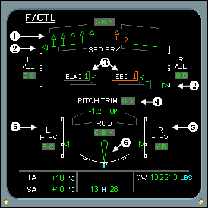

Flight Control Displays
F/CTL Page Description
1. SPOILERS/SPEED BRAKES INDICATIONS
- Spoiler deflected
- Spoiler retracted

- Spoiler fault deflected
- Spoiler fault retracted
2. AILERONS POSITION IDICATOR - Displays white scale and green index. Index changes to amber when both actuators (green and blue) are not available.
3. ELAC and SEC INDICATIONS - The number displays green and the box displays white. Both change to amber in case of failure of associated computer or both flight control data concentrators.
4. PITCH TRIM POSITION INDICATION - PITCH TRIM displays white; changes to amber in case of pitch trim jam. G Y displays green; changes to amber in case of hydraulic system low pressure.
|  |
5. ELEVATOR POSITION INDICATION - Displays white scale and green index. Index changes to amber when both associated actuators are not available.
6. RUDDER POSITION INDICATION - Displays green. Rudder symbol and scale change to amber when all three hydraulic systems indicate low pressure.